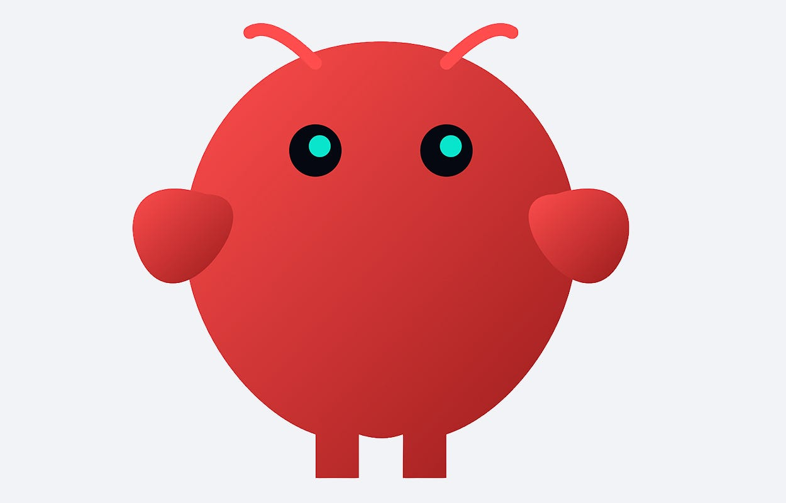

Systems Design · AI
Mar 11, 2026
OpenClaw: How a Self-Hosted AI Assistant Actually Works
A deep-dive into OpenClaw's architecture — Ollama, Open WebUI, and how to deploy your own private AI on local hardware. Includes bilingual guide.